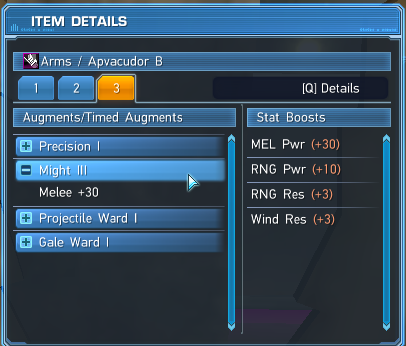
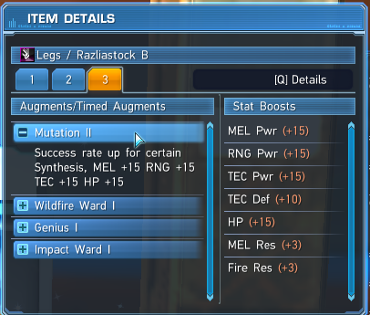
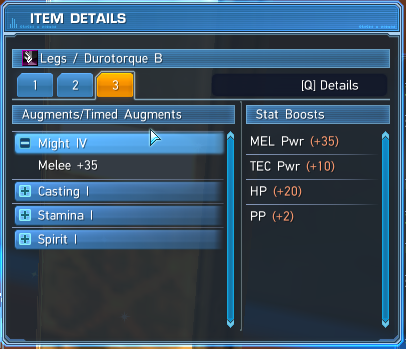
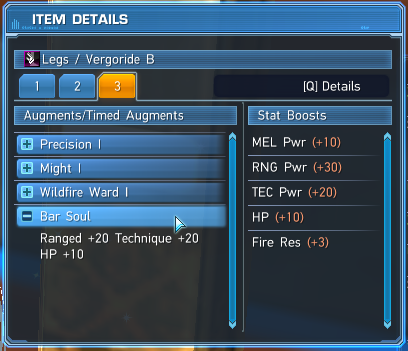
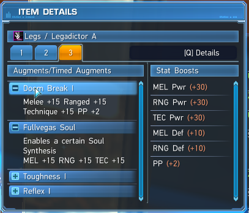
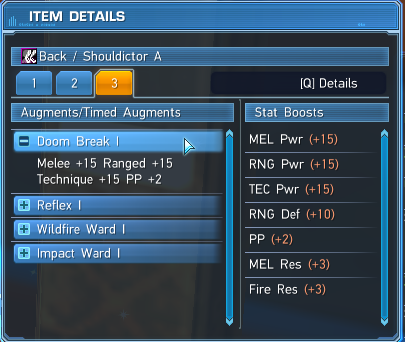
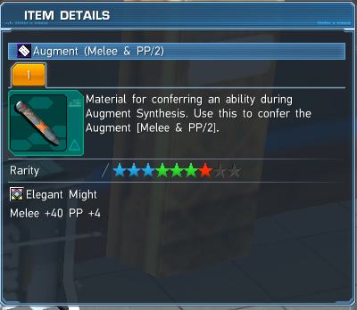
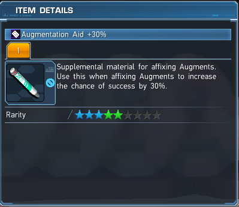
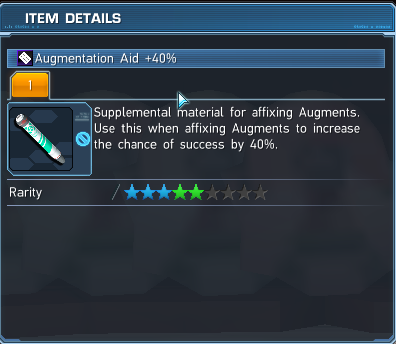

<!DOCTYPE html>
<html>
<head>
	<link rel="stylesheet" href="https://cdn.jsdelivr.net/npm/bootstrap@4.5.3/dist/css/bootstrap.min.css" integrity="sha384-TX8t27EcRE3e/ihU7zmQxVncDAy5uIKz4rEkgIXeMed4M0jlfIDPvg6uqKI2xXr2" crossorigin="anonymous">
	<link href="https://fonts.googleapis.com/css?family=Anton|Roboto|Roboto+Slab|Teko&display=swap" rel="stylesheet"> 

	<title>Affixing Guide</title>
	<link rel="stylesheet" type="text/css" href="style.css">
</head>
</html>
<body>
<nav class="navbar navbar-expand-lg navbar-light bg-light">
    <a class="navbar-brand" href="#">
    
    Affixing Guide
  </a>

  <div class="collapse navbar-collapse" id="navbarSupportedContent">
    <ul class="navbar-nav mr-auto">
      <li class="nav-item active">
        <a class="nav-link" href="index.html">Home</a>
      </li>
      <li class="nav-item">
        <a class="nav-link" href="builds.html">Builds<span class="sr-only">(current)</span></a>
      </li>
    </ul>
  </div>
</nav>

<div class="container">
	<h2 class="mt-4">Budget Melee Build</h2>
	<p>Cost: ~10 million meseta (As of 2020-11-22)</p>
	<p>Stats this build will give: +115 Melee power, +40 Range power, +40 Tech power, +35 HP, +9 PP</p>
	
	<br>
	<br>
	
	<h3>IMPORTANT Terms to Remember in ths guide:</h3>
	<p>Affixing: The process of modifying, adding or removing augments.</p>
	<p>Augments: These are your "enchantments" or "modifiers". They help increase stats on weapons and units.</p>
	<p>Augmentation Aides: These are success boosters to help increase the chances during affixing. They are easily obtainable by trading ex-cubes at the Ex-Cube swap shop on the 2nd floor of the shopping plaza.</p>
	<p>Base: This is the foundation of everything, and the unit/weapon that the augments will be affixed onto. This whole build will end up here.</p>
	<p>Fodder: Units or Weapons that contain augments to help affix your base.</p>
	<p>Slots: How many AUGMENTS an unit or weapon contains.</p>
	
	<br>
	<br>
	
	<h3>Materials Required to make this build:</h3>
	<br>
	<br>
	<br>
	<p class="material pt-20">(3x) Might III Units at 4 slots. Drops with units (rarely). Buy from player shop.</p>
	
	<br>
	<br>
	<br>
	<br>
	<br>
	<br>	
	<br>
	<p class="material">(1x) Mutation II Unit at 4 slots. Buy from player shop.</p>
	
	<br>
	<br>
	<br>
	<br>
	<br>
	<br>
	<br>
	<p class="material">(1x) Might IV Unit at 4 slots. Buy from player shop.</p>
	
	<br>
	<br>
	<p class="material">(1x) Bar soul (Ringa Soul, Shraider Soul, or any spices soul works) Unit at 4 slots. Dropped from Bar Lodos, this guy shows up commonly in Floating Facility explorations and advanced quests. Or buy from player shop</p>
	
	<br>
	<br>
	<p class="material">(1x) Doom Break I with Fullvegas Soul (Eastern Soul or Escarde Soul works as well) Unit at 4 slots. Farmed in Tokyo or Los Vegas Explorations (dropped from the boss "Laplace". Or buy from player shop</p>
	
	<br>
	<br>
	<br>
	<br>
	<br>
	<p class="material">(2x) Doom Break I Unit at 4 slots. Farmed in Tokyo or Las Vegas Explorations (dropped from the boss "Laplace".</p>
	
	<br>
	<br>
	<br>
	<br>
	<br>
	<br>
	<p class="material">(1x) Augment (Melee & PP/2) also known as Elegant Might. From AC scratches and player shop.</p>
	
	<br>
	<br>
	<br>
	<br>
	<p class="material">(1x) Augmentation Aid +30%. From the Ex-Cube swap shop, Weekly Arks Missions, Daily Log-In rewards, and Episode 5 Story Missions.</p>
	
	<br>
	<br>
	<br>
	<br>
	<br>
	<p class="material">(1x) Augmentation Aid +40%. From the Ex-Cube swap shop, Daily Log-In rewards, and Episode 5 Story Missions.</p>
	
	<br>
	<br>
	<br>
	<br>
	<br>
	<br>
	<br>
	
	<h3>Step 1: Downslotting your base to 4 slots.</h3>
	<p>In-depth Upslotting/Downslotting page <a href="insertlink">here</a>. </p>
	<p>1. If your unit is at 4 slots already go to Step 3. If your unit is 3 slots or less go to Step 2. If your base unit is 5 slots or more, go grab a junk unit with the same amount or more slots as your base unit.</p>
	<p>2. Go to Dudu/Monica, and select "Affix Augment".</p>
	<p>3. First select your base unit, and then the junk unit.</p>
	<p>4. Click "Confirm" and if there is a pop up saying "You have a support item that certain Augments can be affixed to. Choose the one you wish to use", choose "Don't Use".</p>
	<p>5. Select the same amount of augments as your base unit that have LOW success rates, and click "Start Affix Augment".</p>
	<p>6. Now click "Yes", and unless you are very lucky at the wrong times, you can move on to Step 2. If your unit is still 5 slots or more, repeat 1-5</p>
	<br>
	
	<h3>Step 2: Upslotting your base to 4 slots.</h3>
	<p>1. If your unit is at 4 slots already go to Step 3. If your base unit is 3 slots or less, get 2 junk units with the same amount of slots or more as your unit.</p>
	<p>2. Go to Dudu/Monica, and select "Affix Augment".</p>
	<p>3. Now select your base unit first, and then select the 2 junk units.</p>
	<p>4. Click "Confirm" and if there is a pop up saying "You have a support item that certain Augments can be affixed to. Choose the one you wish to use", choose "Don't Use".</p>
	<p>5. Select the same amount of augments with an extra augment that has HIGH chances of success to upslot your unit, and click "Start Affix Augment".</p>
	<p>5. Now under "Success Boosters" click the "Don't Use" dropdown and select the Success Booster (Augmentation Aid) you would like to use (I suggest using an Augment Aid +30), and click "Yes" after you have done so.</p>
	<p>6. Now pray that everything succeeds if they are not all at 100% for success.</p>
	<p>7. Repeat 1-6 until your base unit is at 4 slots.</p>
	
	<br>
	
	<h3>Step 3: Affixing Might 4 onto your base unit.</h3>
	<p>1. Take your base unit at 4 slots, the (3x) Might III 4 slot units, and the mutation II 4 slot unit to Dudu/Monica</p>
	<p>2. Select "Affix Augment", first select your base unit, then the (3x) Might III 4 slot units, and the mutation II 4 slot unit</p>
	<p>3. Click "Confirm" and if there is a pop up saying "You have a support item that certain Augments can be affixed to. Choose the one you wish to use", choose "Don't Use".</p>
	<p>4. Select Might IV, and 3 other augments that have at least 70% chance for success and click "Start Affix Augment".</p>
	<p>5. Now under "Success Boosters" click the "Don't Use" dropdown and select the Augmentation Aid +30%, and click "Yes" after you have done so.</p>
	
	<br>
	
	<h3>Step 4: Making the final product.</h3>
	<p>1. Take your base unit at 4 slots, the Might IV 4 slot units, Bar soul 4 slot unit, Doom Break I with Fullvegas Soul 4 slot unit, (2x) Doom Break I 4 slot units, and Augment (Melee & PP/2) to Dudu/Monica</p>
	<p>2. Select "Affix Augment", first select your base unit, then select the Might IV 4 slot units, Bar soul 4 slot unit, Doom Break I with Fullvegas Soul 4 slot unit, and (2x) Doom Break I 4 slot units.</p>
	<p>3. Click "Confirm" and there should be a pop up saying "You have a support item that certain Augments can be affixed to. Choose the one you wish to use", choose "Augment (Melee & PP/2)".</p>
	<p>4. Select Might 4, Allies Di Soul, Doom Break 1 and Elegant Might (This might be already selected for you) then click "Start Affix Augment".</p>
	<p>5. Now under "Success Boosters" click the "Don't Use" dropdown and select the Augmentation Aid +40%, and click "Yes" after you have done so.</p>
	<p>6. Enjoy your newly affixed 4 slot unit! BEST OF LUCK ARKS OPERATIVE!</p>